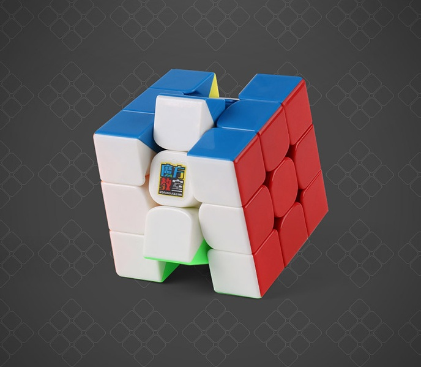
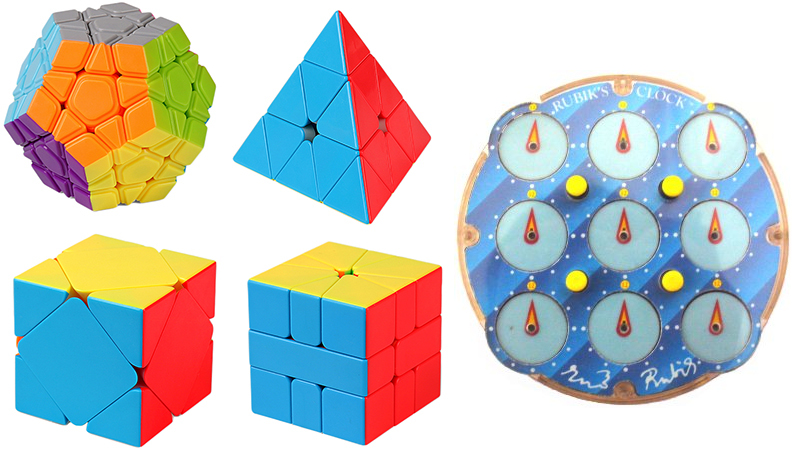
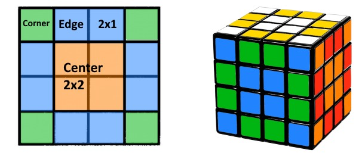
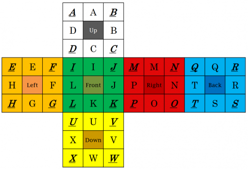
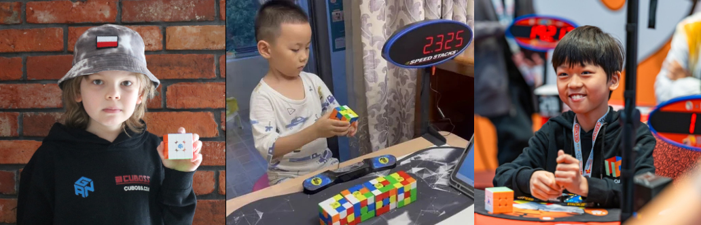

The Rubik's cube is often considered a symbol of intelligence, and being able to solve one is impressive on its own to most people. Despite its initial popularity dying down in the early 1980s, it was revived in the 21st century by a community of people who competed with each other to solve it as fast as possible. The World Cube Association (WCA) is the predominant international regulating body for these so-called "speedcubers" and hosts competitions where records and rankings are decided. Though the standard 3x3 is the most popular, there are 16 other official events currently offered by the organization. Most of these events focus primarily on speed (being true speedcubing events), although some prioritize other metrics.

The main patent for the Rubik's cube expired in the year 2000, allowing other companies to make imitations. The original cube is considered clunky and slow, making the Chinese knockoffs actually superior for speedcubing.
Events
The original Rubik's cube has dimensions of 3x3x3, but the WCA runs speedsolving events for every cube size from 2x2x2 to 7x7x7, as well as the Pyraminx (a tetrahedron), Megaminx (a dodecahedron), the Rubik's Clock, and the Skewb and Square-1 cube variants. In these events, every competitor receives a puzzle with the same scramble for each attempt. They are allowed to inspect the puzzle for up to 15 seconds, then they must start a timer and begin their solve. The timer is stopped upon completion, and this time is recorded as their result. In addition to the events previously mentioned, the 3x3 one-handed event also follows these rules, where two hands are allowed for inspection, but only one is allowed for the solve itself.

These wacky shapes are lesser known but nonetheless included in the WCA's list of events. The Pyraminx is actually considered easier than a 2x2 cube (you can solve it just by messing around), while the Megaminx is somewhere between a 3x3 and 4x4. The Skewb and Square-1 are less difficult than a 3x3, though the Square-1 is the most unique puzzle in all WCA events due to its changing shape. Finally, the clock (despite having a back side not shown) is probably the easiest of all events.
The other major category is comprised of the blindfolded events, which include 3x3 to 5x5 and multiblind. In these, the competitor first starts the timer, then begins inspecting the cube (there is no inspection time limit, though the entire solve cannot take more than 10 minutes). They can only start solving after donning a blindfold. For multiblind, the procedure is the same, except multiple cubes are memorized during the inspection phase, and the score recorded is the number of cubes successfully solved out of the number of cubes attempted (the timer is there due to a 1-hour total limit and for tie-breaking). The 3x3 fewest moves event is the only other event where a score other than time is recorded, although time is again used to limit solves to 1 hour. In all events except for multiblind, an average of multiple solves is taken in addition to the best single score. Past events also include 3x3 with feet, which was removed due to a lack of popularity in 2019.

Though multiblind attempts are limited to one hour in official WCA events, the current world record holder livestreams his own longer ones, including a 250 cube attempt that took nearly 8 hours.
Solving Methods
Learning to solve a Rubik's cube for the first time is fairly easy using the Internet. There are methods specifically made for beginners that minimize the use of
algorithms and more abstract concepts. However, if your goal is to solve the cube as quickly as possible, more advanced methods are required, the most popular of which by far is
CFOP (pronounced SEE-fop), which is used by intermediates and top contestants alike. ZB (Zborowski-Bruchem) is a more efficient variant of CFOP that uses 300 algorithms, and although it may not be required to get a world record, many competitors partially learn it for greater consistency. Roux is another popular method that is even more efficient in terms of move count than ZB, and is also better for one-handed solving, though it relies more on intuition than pattern recognition. For larger cubes, the basic method is reduction to a 3x3. Even-numbered large cubes (e.g. 4x4) are fundamentally different from odd-numbered cubes (e.g. 5x5), but if you can solve one, you can solve any larger one with the same parity.

The method of reduction involves grouping together inner pieces to form one "center piece" and the other non-corner pieces into one "edge piece" so that the cube is functionally the same as a 3x3 if only the outer layers are turned. On even-numbered cubes, this can result in a "parity" error, where one edge is flipped (OLL parity) or two edges are swapped (PLL parity), which is impossible on a 3x3 cube. Though many cubers prefer more advanced methods (e.g. Yau), there are still unbroken world records held by reduction users.
There are a wide variety of methods for solving cubes blindfolded at each level. Each of these has the same memorization stage, however; each piece is assigned a letter, and on average, a sequence of 20 letters will have to be memorized (these are typically paired and turned into memorable words). The standard beginner's method is known as Old Pochmann (OP), where each piece is swapped with another one by one until they are all in the right spot. This is achieved through swapping each piece with a specific position called the buffer. As an analogy, you can sort a hand of cards by swapping two cards at a time, and you can swap any two cards by swapping them both with some other position successively. The M2 method introduces a more efficient swapping algorithm for edges, but has some difficult cases, making it a bit more challenging than OP. 3-style is an advanced method that swaps three pieces at a time rather than two, allowing two pieces to be solved at a time. This clearly has a speed advantage, but it also uses 800 algorithms in total (though none are strictly necessary).

The standard way of assigning letters to positions on the cube is called the Speffz scheme. With the cube in its standard orientation (white center facing up and green on the front), each edge piece is given a letter in the alphabet counting clockwise from the top, starting with the top face, then left, front, right, back, and bottom. The same lettering scheme is used for corners starting with the top-left piece.
Notable Records
At the time of publishing, the current WCA record for a single 3x3 solve is 2.76 seconds, held by 9-year-old Teodor Zajder from Poland since 2026. From China, number 2 is 8-year-old Xuanyi Geng with 2.80s, who also holds the world record average of 3.71s, and formerly held the world record single of 3.05s at the age of 7. Number 3 is 12-year-old Yiheng Wang with 3.08s, though he also previously held world records in both single and average time at the age of 9 (he has broken 11 world records, many of which were his own). Previously, the record was held by American Max Park (age 24) with a time of 3.13s, who has been the world champion in every event from 3x3 to 7x7 and 3x3 one-handed at various points. This record followed a 3.47s solve by Yusheng Du (who was never considered a top-tier competitor due to his average performance, despite this achievement), which went unbroken for 5 years, the longest a record has lasted in this event since the WCA's founding. Finally, often considered one of the greatest speedcubers of all time, Feliks Zemdegs (age 30) has set 121 world records, including his best 3x3 single of 4.22s.

From left to right, numbers 1, 2, and 3 in the current world rankings for 3x3 single time.
The most versatile speedcuber is Luke Garrett (20 years old), as determined by his sum of all rankings. Impressively, his best events are in 3x3, which tend to be the most competitive, including a world record average in 3x3 one-handed of 7.72s. His lowest world ranking is 391 in average 3x3 blindfolded with a time of 37.89s, which is nothing to scoff at. The best multiblind solver is Graham Siggins, who set the world record with 63 solved out of 65 attempted in 58:23. In addition to his unofficial multiblind record of 238/250, he holds every record for 6x6 through 11x11 blindfolded (which the WCA does not have as official events). The fastest single 3x3 blindfolded time is 11.67s, held by Charlie Eggins, who previously held the world record at the age of 14. He is also tied for first with Tommy Cherry in the average 3x3 blindfolded with a time of 14.05s, who set a world record for 3x3 with feet at the age of 12. The world record single for 3x3 fewest moves is a four-way tie of 16, with the first being set in 2019.
After setting his one-handed world record, Garrett proceeded to jump onto a chair in celebration and immediately fall off (in a literal sense). Interestingly, this is not one of the most infamous pop-offs in speedcubing history.
The Future of Cubing
In recent years, there has been a notable shift in the demographics of top speedcubers, with their ages often being under 10. As far as I have looked, there is no other sport where the best of the best are this young. As stated in the introduction, the Rubik's cube is seen as a symbol of intelligence, but children are most definitely not, which seems to conflict with this trend. Regardless of the reasons why this is the case (though one can speculate), it seems to be the rule rather than the exception that young prodigies dominate, even outside of the 3x3 event. It would therefore be reasonable to expect that over time, almost all WCA events will eventually have records held by those under the age of 14. This may raise issues as more young competitors appear, with parents becoming increasingly determined to push their children to the limit. Right now, the WCA has no restrictions on age, though they may be forced to reexamine their regulations in the future. We are already seeing some issues relating to conflicts between the parents of competitors (e.g. the Yiheng sliding incident), although this is not widespread yet, probably because speedcubing is not very lucrative (though this may change if it experiences a spike in popularity similar to the recent chess craze). On the other hand, it is a rather inexpensive hobby, so if reading any of this inspired you, maybe give it a try. Though you may not be 9 years old, or have world champion potential, you might enjoy it, which is all that really matters.